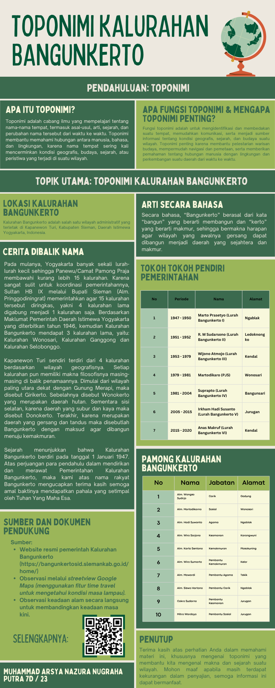

Materi

Tempatkan file gambar di
img/infografisRingkasan Isi
Toponimi adalah ilmu yang mempelajari nama tempat, termasuk asal-usul, arti, dan sejarahnya.
Toponimi berfungsi untuk identifikasi tempat, komunikasi, dan pelestarian budaya.
Bangunkerto terletak di Kapanewon Turi, Sleman, Yogyakarta.
Nama Bangunkerto berarti membangun menuju kemakmuran.
Didirikan pada 1 Januari 1947 dari gabungan beberapa kalurahan.
Nama wilayah di Turi memiliki makna geografis dan filosofis.
Sumber
1
Website resmi Kalurahan Bangunkerto
bangunkertosid.slemankab.go.id
2
Google Maps (Street View Time Travel)
maps.google.com
2
Observasi langsung
Pengamatan langsung, klik untuk melihat arsip foto (https://drive.google.com/drive/folders/1IKJufgu-7dMW6b9PemMOCLJbsexz4aaI)
Quiz
Soal 1 / 5
Apa yang dimaksud dengan Toponimi?
Soal 2 / 5
Di mana letak Kalurahan Bangunkerto?
Soal 3 / 5
Apa arti dari nama "Bangunkerto"?
Soal 4 / 5
Kapan Kalurahan Bangunkerto didirikan?
Soal 5 / 5
Apa salah satu fungsi utama Toponimi?
0/5
Skor Kamu